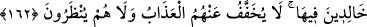

tevbeleri çokça kabûl eden ve bol bol rahmet eden bir Allah’ım.
Allah Teâlâ, yaşarken lânetlenenlerin öldükten sonra da nasıl lânetlendiklerini
belirtmek üzere şöyle buyuruyor:
161. (Âyetlerimizi) inkâr etmiş ve kâfir olarak ölmüşlere gelince, işte Allah’ın
meleklerin ve tüm insanların lâneti onların üzerinedir.
“Bildiklerini gizleyip tevbe etmemek sûretiyle küfürlerinde ısrarla devam eden ve bu
hâl üzere ölen kimseler, Allah’ın, meleklerin ve bütün insanların lânetine uğramışlardır.
Dünyâda ve âhırette ebedî lânete müstehak olanlar sadece onlardır.”
Burada insanlardan, lânet edenlerden maksad, mü’minlerdir. Çünkü insaniyetten
istifâde ettiklerinden ötürü hakikatte insan denilmeye lâyık olanlar mü’minlerdir.
Kâfirler ise hayvanlar gibidirler, hatta onlardan daha şaşkın haldedirler. Bu sebeple
Allah katında değere şâyân bir yönleri yoktur. Diğer bir görüşe göre “nâs”, “âmm” bir
kelimedir. Mü’mini, kâfiri içine alır. Çünkü kıyâmet günü kâfirler, birbirlerine lânet
ederler. Allah Teâlâ da onlara lânet eder. Sonra melekler, sonra da insanlar lânet
ederler. Zâlim kimse, zâlimlere lânet eder. Kendisi zâlim olduğu halde zâlimlere lânet
eden kişi, kendine lânet etmiş olur.
162. Onlar ebediyen lânet içinde kalırlar. Artık ne azâbları hafifletilir ne de
onların yüzlerine bakılır.
Bunlar sürekli olarak cehennemde kalmak sûretiyle dâimî olarak Allah’ın rahmetinden
uzak kalacaklardır. Yâni ebedî olarak lânetlenmişlerdir. Azâbları çok ve acıklıdır, ne
üzerlerinden kaldırılır, ne de hafifletilir. Onlara tekrar dünyaya dönmeye, tevbe etmeye
ve mâzeret beyân etmeye süre tanınıp müsâade edilmez. Başka bir ifâde ile onlar,
sürekli olarak azâblandırılırlar. Tattıkları azâb, bir benzerine veya daha şiddetlisine
bitişmek sûretiyle devam eder. Orada istirâhat etmeleri için bir an dahi mühlet
verilmez. Âyette geçen “Nazar”dan maksad “beklemek” anlamına gelen “intizâr”dır. O
zaman mânâ şöyle olur: Onlar mâzeret beyân etmek için bekletilmezler. Ya da
kendilerine rahmet nazarıyla bakılmaz. Onların niyetleri, şâyed yaşasalar, ebedî olarak
putlara ibâdet etmek olduğu için, bu niyetlerine mukabil ebedî olarak cehennemde kalıp
azâbını tadacaklardır.
Bunlar, durumlarına göre cehennemin çeşitli tabakalarına yerleştirilirler. Küfürlerine